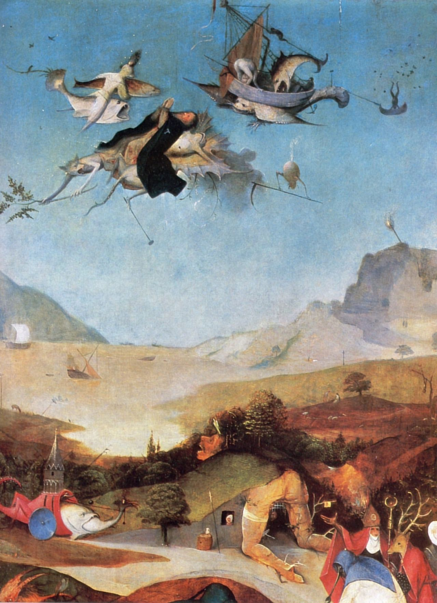
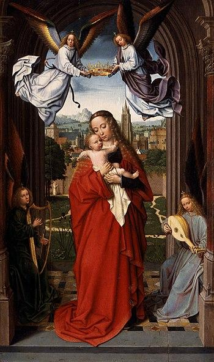

This essay concerns a 6th century icon made of répoussé silver depicting, in relief, St. Simeon the Elder.1 Here, he stands atop a tall pillar. A shell resembling the rays of the sun rising over a mountain opens above him to reveal a pearl. Around the pillar, a great serpent is wound. St. Simeon was perhaps the most celebrated of the early monks of Late Antique Syria, the first practitioners of Christian anchoritism, the religious use of solitude achieved through confinement, just as the known Desert Fathers of Egypt are widely thought of as the originators of eremeticism, the religious use of solitude achieved through vast, open spaces. He was also the first stylite, that is, the first ascetic to confine himself to living atop a pillar for up to 40 years at a time, exposed to the elements, fasting, warring against demons, mediating between earth and heaven, and performing miracles.2
Flesh
To say that this essay concerns this icon is perhaps not entirely accurate. Better to say that the icon is the votive object around which this essay is wound. The icon will serve as the guide or streambed of our contemplation; not merely an ocular contemplation, an unpacking of symbols or historical trace of the practice it depicts, but a sensuous contemplation, as if we were running our fingertips along the icon’s broken surface, breathing in the incense coiling around us like the silver snake which slithers through the votive candlelight. To some extent, we will be playing with the boundaries between the emic and etic interpretation of this icon: we will not be treating this icon as a representation of the saint, but as the saint’s substance, his flesh.
Here, the term “substance” is not mere rhetoric: in The Sensuous Icon, Bissera Pentcheva’s lovely book on pre-iconoclasm reppoussé and mixed media icons, she tells us that the stylites were themselves known as icons (eikoi). In the Late Antique and Byzantine world, such icons were formed out of a kind of base matter intertwined with pneuma, that is, spirit but also breath, sound, smells, etc. Or more accurately, the complex of the stylite’s dilapidated body, the column on which he stood, down to the dust and earth at the column’s base, which when mixed with oil was turned into magical hnana, constituted such an eikon. Indeed, as many scholars of the Symeon and the stylites that succeeded him have noted, the columns continued to operate as pilgrimage sites and founts of spiritual potency long after the Saints that topped them had rotted away. Just so, such icons were understood as matter in which pneuma had been pressed, like value into a coin. The icon is where flesh, stone, or bronze served as the form-fitting mask of an invisible, unknowable, formless power. Indeed it was the spiritual power of the icon’s flesh that so alarmed the iconoclasts; paintings, considered mere representations of the saints, were safer.
Invoking the icon materiality and sensuality may seem hubristic to some. After all, the icon in question buried in the cellars of the Louvre, disembedded from its ritual setting, and digitally mediated. Yet this is not a materiality that stems from proximity or presence. Rather, it is the materiality of the mythic in the strictest structural-anthropological sense of the word. As we read through the three extant accounts of St. Simeon’s life, we find that the icon does not illustrate any specific instance or episode in St. Simeon’s life, at least as recorded in the three accounts that have survived into the present. In the Syriac life, Simeon received the pearl during his first vision, when he is still a young man burning storax in the name of a God he does not yet know. A flock of peacocks “appeared like a fire, as their faces were blazing rays from their eyes” and two beautiful men appear. “Then the one who had come up from under the altar placed in the saint’s mouth something white as snow, round and like a pearl.”3 In Antoninus, his disciple’s, account, an Arab king comes to the Saint’s enclosure. A worm falls from the saint’s thigh, “a stinking worm from a stinking flesh,” he tells the king. But as the king closes his hand around the worm and opens it again, the worm becomes a pearl, “in fact a priceless one—by means of which the lord has enlightened me.” In both these accounts, the vision or transformation of the pearl occurs well before Simeon mounts the pillar, when he is still experimenting with forms of enclosure, as was common among monks given the mystical foment in the mountains of Late Antique Syria.
The serpent, too, seems to be a sort of biographical anachronism. In Antoninus, Simeon tames a dragon by causing a splinter to fall from its eye, but this dragon merely remains coiled outside his enclosure for three days.4 And again, this is all before he ascends the pillar. Similarly, in the Syriac text, Simeon saves a young boy from the clutches of a black serpent, and yet he does this remotely. The deacon must travel to see Simeon, who gives him a prayer and a command to repeat to the snake, “after that the snake uncoiled and went away.”5
The plaque, then, is not an illustration of a particular episode of the life of St Simeon, rather it is a diagram of his body’s power; not only his biological body, but all the substances, be they dust, oil, silver, or stone, that are made of this undifferentiated, enchanted substance. The plaque should not be “read” as a biographical or historical unfolding of events. Its logic is at least spatial as it is temporal. Hence our argument that this is a mythic thing, not a text, in Levi-Strauss’ sense:
Thus, myth grows spiral-wise until the intellectual impulse which has produced it is exhausted. Its growth is a continuous process whereas its structure remains discontinuous. If this is the case, we should assume that it closely corresponds, in the realm of the spoken word, to a crystal in the realm of physical matter.6
Indeed, central to Levi-Strauss’ theory of myth is the modularity and reversibility of myths as they are told and retold. Just as sculptures or magical objects are not necessarily read from head to foot, so to speak, but circumambulated and even caressed, kissed, touched or passed from hand to hand (at least until the modern museum forbade the probing hand and birth of minotaurs) the icon has a sort of corporeality that gives it a depth that belies its appearance as a modest relief from a fixed perspective. One could even speak of this icon as a series of architectural spaces or a number of trails intersecting in a forest, each suggesting themselves to the wanderer, or one could follow Levi-Strauss in seeing, in myth, a play of harmony and dissonance, where one must “read diachronically along one axis...and synchronically along the other axis.” The icon in question, then, is no text or mnemonic device. In its reversibility, the infinite finitude of its permutations, its concealment of an obverse face, it has the plasticity and vitality of a fleshy body, a song, or a living myth, passed from mouth to mouth.
Stone
The question of stylitism’s antecedents has been a matter of some debate. Namely, scholars of Late Antiquity are divided on whether to privilege the continuities between Stylitism and the pre-Christian and non-Christian uses of stones and stone pillars in the Levant and Greek Near East, or whether one should take these monk’s sense of rupture with the world and with the pagan past at face value. The most obvious precursor to the Stylites would be the Syrian Phallobates recorded by Lucian in second century AD:
In the gateway stand the phalli which Dionysus set up; they are 1800 feet high. A man climbs up one of these phalli twice each year and lives on the tip of the phallus for a period of seven days. This reason is given for the ascent. The populace believes that he communes with the gods on high and asks for blessings on all Syria, and the god hear the prayers from nearby. Others think that this, too, is done because of Deucalion, as a memorial of that disaster when men went to the mountains and the highest of the trees out of terror fo the flood. Now these explanations eeem unbelievable to me. I think that they do this as well for Dionysus. I make the conjecture for these reasons: Whoever erects phalli to Dionysus sets on them wooden men—for what reason I will not say. At any rate it seems to me that the man climbs up in imitation of this wooden man. Many come and deposit gold and silver, other deposit bronze, which they use as coin, into a large jar which sits in front and each person says his name. Someone else stands by and calls up the name. The climber receives it and makes a prayer for each person. As he prays, he shakes the bronze device which sounds loud and sharp when it is moved He never sleeps. If sleep ever does overtake him, a scorpion climbs up, wakes him and treats him most unpleasantly. This is the penalty imposed upon him for sleeping. They tell holy and pious stories about the scorpion.7
Some scholars, including Doran and Peter Brown, have flatly rejected this continuity. These scholars argue that Early and Late Antique Christians went to great lengths to extirpate any trace of paganism from their religious practices and even, as the religion grew and the mere avoidance of pollution was deemed insufficient, from their everyday habits and thoughts. That an austere, self-mortifying champion against the demons like St. Symeon would adopt a pagan practice from several centuries prior, much less one with the sexual charge of a Dionysian cult, is thus unthinkable, so the argument goes.
For Doran, Symeon’s asceticism atop successively taller pillars draws from both the imatio Christi with its iconography of “triumphant standing with arms outstretched, cross-like,” and the longrunning theme of “standing before the lord,” the prerogative of God’s angelic court.8 Gesturing at the role of “standing” in the mystical ascents of several other “motionless saints,” where each baptism or each wrung up the ladder is described as a “standing,” Doran insists that Symeon’s practices are rooted in Biblical exegesis and, it seems, an analogic correspondence between the saint’s motionless, erect body, the stone pillar, and the crucified body of Christ.
David Frankfurter makes a convincing counterargument, however. He points out that the Phallobates were carrying out a folk practice that took place both physically and figuratively outside the Hellenized temple of Atargatis at Hierapolis.9 According to Frankfurter, that Lucian recognized the stone pillars atop which the phallobates meditated as phalloi only speaks to the Greco-Roman tendency to translate foreign religions into their official, imperial pantheon. He argues that, instead of the Hellenistic phallus, this folk practice is more likely linked to the stelle and semeion of Mesopotamia; the horned pillars that had some now mysterious religious significance. He also emphasizes baetyls: large stones, particular meteorites, often erected on mountaintops, said to be imbued with life or divinity. Indeed, Baetyl cults were widespread among semitic speaking peoples well before and into the Christian era, the most famous of these baetyls being the black stone set into the corner of the Kaaba in Mecca and El Gabal, the black meteorite that the short lived child-emperor, Heliogabalus, dragged from Syria and installed in Rome as an equally short lived God of a new state religion in the 3rd century AD. Like the pre-Islamic black stone that was spared Mohammed’s smashing of the idols because of its non-representational nature, the austere and even anti-anthropomorphic nature of these baetyls and semions allowed them to be incorporated into the ascetic Christianity of the stylites.
Unfortunately, both these perspectives are too focussed on the ideological genealogy of the practices in question rather than the relations between the practices themselves. Moreover, they are not, we will argue, irreconcilable. Most importantly, while they might give us some insight into the popularity of Stylites as objects of veneration, neither can explain the advent of Stylitism as an ascetic practice. Instead of looking at St. Symeon’s creative twist on Late Antique anchoritism as a repurposing of old texts or bygone forms of religiosity—and in any case his illiterate, peasant background make this a bit unlikely—we will treat stylitism as an outcome of the experimental logic of Syriac asceticism itself.
Boundary Play
By using the term “experimental logic” I mean to call attention to the role of experimentation or even fashion in late antique Syrian monasticism. As Robert Doran points out, in the Late Antique Syriac world, monasteries were not places of collective life and shared work, as we are accustomed to thinking, but simply the collected dwellings of unearthly ascetics, striving to be in the world but not of the world. Adding to the mood of competitive experimentation was the strong Messalian tinge to Syriac mysticism, that is, there was a widespread sense that only prayer and supplication, rather than the sacraments, can cast out the demon that dwells in every soul. As Brian Colless points out in The Wisdom of the Pearlers, though Messalianism was officially condemned in the Council of Ephesus in 431 C.E., many of the most important writings informing Syriac mysticism, the Book of Degrees or even the earlier writings of Evagrios, for example, had strong Messalian roots, even if they were systematically obfuscated, reattributed, and anonymized .10
Given the individualistic bent of Syriac monasticism, it is hardly surprising that, in reading Theodoret’s History of the Monks of Syria, we encounter an entire folk-architecture of self-mortification and boundary play. By boundary play I mean that these practices all seem to play with the lines between inside and out, confinement and freedom, extreme interiority and extreme exposure. Roger Caillois, in his book Man, Play, and Games, elucidates two elements that make up the most elemental forms of play: paieda and ludus. The first is merely the expression of surplus energy, of vitality, gambolling, skipping, spontaneous feats of strength of agility. Ludus, in contrast, encompasses the self-imposed limits, that is, implicit or explicit rules imposed upon paieda.11 And yet these boundaries do not merely serve to constrain the expression of vitality. Rather, through practice, the players develop a mastery of these boundaries: in the most elemental sense, one can imagine how a player develops an intuitive feel for the zones and dimensions of a basketball court, football pitch, or what have you; the splitting of the world into an “outside” and “inside” allows for a bodily mastery of the boundary between the two. And indeed, the relation of ludus to mystic asceticism is not merely an analogy between games and ascetic feats. Rather, Caillois explicitly points to the asceticism of the earliest childhood games:
He loves to play with his own pain, for example by probing a toothache with his tongue. He also likes to be frightened. He thus looks for a physical illness, limited and controlled, of which he is the cause or sometimes seeks an anxiety that he, being the cause, can stop at will. At various points the fundamental aspects of play are already recognizable, i.e. voluntary, agreed upon, isolated, and regulated activity. Soon there is born the desire to invent rules, and to abide by them whatever the cost. The child then makes all kinds of bets...he hops, walks backwards with his eyes closed, plays at who can look longest at the sun, and will suffer pain or stand in a painful position.
In this sense, Caillois is quite the realist in comparison to the legion of theorists and aficionados of play, who see it as a return to some kinder, utopian childhood that never was--the Romantic notion of childhood having written-over the cruelty and deadly seriousness children: a child’s games have more in common with war and self-mortification than the wonder and whimsy of nostalgic adults.
For example, before and leading up to the advent of stylitism, practices of immurement were the primary object of experimentation and play. The monks were walled-in, but the enclosure often lacked a roof. These substitutions, where desert wastes become dense walls, put into play a generative set of oppositions. The techniques of the body that are developed to master these sets of oppositions lead to the development of the stylite’s platform, where the wall has turned back into distance. Yet this is now vertical distance, a kind of distance where architectural mediation has been incorporated into the production of sacred space. Indeed, in Theodoret’s 5th century A History of the Monks of Syria, we see many other structured improvisations and permutations of these techniques.
In Theodoret’s account of Salamanes, for example, we can see the strong association between a Saint’s potency and a particular community’s well being. Immured on a river bank, Salamanes lays down as if dead in a hole he has dug. Briefly, once a year, the villagers dig a small tunnel and give him food. The village across the river becomes jealous and dig their own tunnel through the mud to abduct him. They carry him across the river and put him in their own enclosure, with its own open grave in the ground. Salamanes is limp, dead to the world throughout, offering no resistance. The rival villagers across the river have no choice but to mount their own expedition, taking the monk back out through a tunnel and putting his living-but-dead body back into his original hole.12
The competition over Salamanes’ pseudo-corpse clearly illustrates how important a resident monk was to the fecundity and status of a given region, and yet even here we are already struck with the experimental innovation of Salamanes boundary-play. Not only does the roofless enclosure put the inside/outside distinction into play, the muddy hole, resembling an open grave, as well as the voluntary paralysis of the monk’s body, plays with the boundary between life and death. Later Syrian “athletes” of the “pious wrestling schools” only bring increasingly virtuoso tricks and techniques to this game: Baradatus and Thalaleus lock themselves in little cages up on the cliff faces of demonic mountains, lacking even room to stand, and the former even adds another layer by covering his entire body in animals skins with only a small hole to breathe from.13 But the true masters of this layering and nesting of enclosures were the young Syriac women attracted to anchoritism: Marana and Cyrus, for example, not only immured themselves without a roof, exposed to sun and snow, but had a second enclosure attached where their two servants were also immured, mediating between them and the world. Weighed down by chains, covered in sheets made sticky and wet with tears, so that they could not see or act upon the world, their particular enclosure is remarkable not only for its baroque elaboration upon the techniques of early anchorites, but for the questions it poses about a solitude of two.14
Returning to Doran’s notion that motionless standing is the crux of Symeon’s mystical practice and analogically tied to the pillar’s equally erect form: we can concur with this observation, namely, that the pillar’s structure corresponds to the structure of the Simeon’s body, without necessarily subscribing to his idea that this practice of standing is the historical origin of the pillar. Indeed, we must take the correspondence further, for the tale of St. Simeon’s body is not one of unilinear straightening, but a generative alternation between disjointed, rotten, moist, entropic states and rigid, perfumed, dried, complex states. Simeon does not stand for the rotten over and against the dried-up, rather he displays and develops his mastery by passing back and forth between them.
Entropy & Complexity
Symeon’s mastery of vital forces, his ability to accelerate, slow, and even reverse them is, as Doran observes, most immediately evident in Symeon’s own bodily practices.
His feet were fastened and bound as if to stocks so that he could not move them either to the right or to the left, with the result that their flesh was worn away from frequent affliction and bone and sinew could be seen. His belly was ruptured from standing so long...Three joints of his spine were dislocated: because of his constant supplication, bending and standing up straight and then bowing down before his Lord, one used to separate from the other and not attach itself to the other until he had finished his discipline.15
Here, we see that Symeon’s alternation between standing at attention and servile supplication is not merely a matter of rote standing and bowing. His spine does not merely bend, it dislocates itself when he bows and comes back together when he stands. When he bows, his body moves towards an entropic, fluid state. When he stands, this flow is reversed, his body moves back towards a complex, solid state. These movements might be likened to the successive fermentation and then the desiccation of a corpse, but what signals Symeon’s extraordinary power is that he can accelerate, slow, and most importantly, reverse the direction of these processes.
Moving beyond Doran’s proposed analogic correspondence between the pillar and the saint’s standing at attention, we should observe that Symeon not only reverses the flows between fermentation and desiccation in accordance with his daily/nightly routine. Rather, his body undergoes such reversals in broader rhythms, with the turning point often aligned with his yearly, Lenten seclusion and fasting. We see this especially in the account of the saint’s mangled foot atop the pillar, which left untreated began to pullulate with parasitic life:
Towards evening it was full of boils and towards morning it burst open and stank; it swarmed with worms and putrid matter was oozing from the saint’s foot—it and the worms mixed together and were falling from the pillar to the ground. The stench was so strong that no one could go even half-way up the ladder without great affliction from the severe rankness of the smell. Even those who served the saint could not go up to him until they had put cedar resin and perfume on their noses.
After months of enduring this rot, turning away doctors and herbalists sent even by the emperor himself, Simeon immures himself for 38 days to fast. Here, he undergoes another vision of fiery cosmic events and beautiful young men. Then, upon opening his enclosure, “they saw him so completely cheerful, and when they observed how quickly his foot had recovered from that violent disease and how that severe wound had gone away, how suddenly that unbearably foul stench had disappeared and been replaced by a fragrant odor.”16
Symeon’s mastery over biological forces of complexity and entropy extends well beyond his own body, however. We see this mastery in his healing and especially his punishment of pilgrims and visitors who obey or stray from his covenants with them. Indeed, one of the most striking aspects for those more familiar with the later, medieval, western anchorites is that, far from confining his penchant for mortification to his own body, Symeon seems to have played the part of vengeful god with gusto. The Syriac Life of Symeon is particularly rife with such examples.
Those who offend Symeon or his followers are subject to having their biological processes accelerated and amplified, even unto the point of a gorey explosion. When a poor farmer complains of a gang stealing his crops, “wicked and presumptuous men who have sinned greatly against monasteries and churches and have troubled many people,” Symeon gives him some hnana (enchanted dust from the foot of his pillar) and tell him to make three crosses in his fields. Not only does Symeon’s intercession allow the man’s crops to grow back with unnatural speed and abundance, the offending gang’s own bodies begin to team with overabundant life unto the point of rottenness and fermentation:
One of them was consumed by elephantiasis and was all broken up and stank. Another suddenly puffed up like a wineskin. He could not even walk without much pain. They started to bring him to the saint. When he had just gone beyond the village border—he moved very slowly because he could not sit on an ass nor could he be carried by men—he stumbled and fell, his belly burst open and his innards fell out and immediately he died and they went and buried him.17
Similarly, when the rapacious councillor of Antioch is rebuked by Symeon and, furious, publicly accuses him of hoarding the gold of his disciples for himself, a “fearful judgement overtook that wicked man—a bitter and incurable disease:”
Suddenly his belly swelled and was puffed up like an inflated wineskin...the counsellor suddenly turned around in bed from pain. His belly ripped open, his innards fell out and he died.18
The recurring theme of swelling up “like a wineskin” explicitly draws the parallel between the process of fermentation, of life feasting of life, and the fate meted out to these offenders. Indeed, Symeon’s power over vital forces extends beyond the human realm. At one point a “great crowd from Lebanon” comes to the Saint. They complain about “evil animals who roamed all over the mountains:”
As they told it, sometimes the creatures looked like women with shorn hair, wandering and lamenting; sometimes like wild beasts. They would even enter into houses and seize people and snatch children from their nursing mothers’ arms and eat them right in front of their eyes and the mothers could not lift a finger to help their little ones.19
Symeon rebukes the crowd for reverting back to their pre-Christian ways, “fleeing for help to dumb, useless idols who can neither help nor harm you...because of this God handed you over to wicked beasts who wreaked vengeance on you as your deeds deserved.” When they bewail their fate and agree to enter into a covenant with the saint, he finally takes pity upon them. Telling them two put up four stones marked with crosses around the village. They return later and relate what happened:
We went and set up those stones and made crosses on them as your holiness commanded, and kept vigil for three days. After that we saw those animals going to and fro, marching around where the crosses had been made and howling so loud it carried over the mountain. Some of them fell down and burst open on the spot beside those stones, some went away howling.
Again, the subject of Symeon’s displeasure is made to “burst” from the inside as the body’s life-giving fluids expand and grow turbulent.
Conversely, those who offend the saint are almost as likely to have their vitality slowed, dried up, and halted. In Persia, a Zarathustrian strongman abducts a virtuous and beautiful Christian maiden. When she persists in refusing his sexual advances, he has her tied to a heavy stone and thrown into the confluence of the Euphrates and the Tigris. He appears above the river atop his pillar and lifts her out. Concurrently, her oppressor has a vision of an armored man who strikes him with a sword:
He leapt up to rise from his position, but that man struck him on his head with his sword. At that moment, his whole right side shriveled from his head down to his toes...he never uttered another word. He was thus afflicted—tormented, suffering and tortured, paralysed like a dry stick.20
Similarly, a tribune from Nicopolis who “lived unjustly, harassed many, and robbed and oppressed and plundered with violence what did not belong to him” disregards the saint’s warnings to change his ways, “a ravaging disease struck and he withered up like wood.”21 And, in a sort of a mirror image of the femme-beasts of Lebanon, who are made to burst-open under the inner pressure of their own organs and fluids, a sort of multiplicitous lion in the mountains of Syria is struck down and paralyzed after being confronted with the saint’s hnana and the sign of the cross.
Interestingly, paralysis and the attendant metaphor of “drying up like wood” are usually attributed to the devil. A beloved priest, to give one example, passes through the devil in the form of mist and falls to the ground. “He lost his vision and his reason, and he dried up like wood.”22 Only by applying hnana taken from the saint’s enclosure are the flows of his vital forces restored. Later, son of a Zoroastrian noble is similarly afflicted by the devil’s paralysis; Symeon heals him and the boy is baptized.23 Indeed, the lives of St Symeon abound with similar tales of paralytics healed; the narrator of the Syriac life even throws up his hands, unable to relate all of them, when he exclaims “numberless paralytics came there carried like baggage, some of them on couches, who could not even turn around...Our Lord gave them healing and relief by his prayer, and they left him healthy and active joyfully carrying their beds and praising God.”24
Again, this suggests that neither the power to chaotically moisten nor the power to arrest vitality and dessicate can be metaphysically assigned to good or evil. St. Simeon can make a body team with maggots and worms, or he can make it dry up into a lifeless husk, like a tree’s branch turned into kindling, severed from the source of its fluids. Symeon even seems to have the same sort of command over the life-giving attributes of the surrounding landscape. When a nearby village disobeys his command to rest on Sundays, their spring dries up. When they come to him as supplicants, he finally relents and gives them hnana and three pebbles marked with crosses to throw into the dried up spring: “when they went out early in the morning they found all the fields inundated, the spring full and pouring out three times as much as much as previously.”25 At other points in the Syriac text he is called upon to produce rain, or even to multiply stores of food such as grain or lentils.26 The tale of a vessel full of oil blessed by the saint is especially telling here in its correspondence to bursting of wineskin-like bellies:
At the very moment that he said, ‘Let our Lord give a blessing,’ it bubbled up and overflowed, like a seething cauldron. The whole place was filled with overflowing oil. The whole group took some of it—they even brought many vessels to take it away—but it did not give out, but it went away full and overflowing with that man. For many years it stayed in his house full as ever, and there was much healing and help in that oil for everybody.27
There is a telling ambivalence to this tale. The overflowing cauldron of oil is indeed miraculous and beneficial, but it is also messy, chaotic, and uncontrollable. Like a vessel filled with life giving fluid, Symeon’s power of the body and over the earth is that he can make them empty-out or overflow at will. The same is true of all abundance, poised as it is between the dry, unmoving bones of the desert and the cacophony of the forest pressing against the membranes of human existence.
Let us return, then, to the correspondence between the pillar and the saint’s body. According to Doran,“to stand” is a byword for “to ascend.” As Doran points out, one of the angels28 teaches Symeon the bodily techniques which he puts into play atop his pillar, and the angels are often described as those who may stand (rather than bow) before God. And yet, the angel and the saint’s movements are not a unidirectional progression from prostration to standing. Rather, the angel “bowed down and straightened himself up many times.” It was thus “that the saint learnt the way he used to bow and straighten up.” The repoussé icon comes back into relief here. It is not enough to draw a line between the unmoving saint’s sweet-smelling corpse, standing before God, and the stone pillar. We must also incorporate the serpents whose coils and disjointed body, plunging in and out of the frieze’s depths, resemble the saint’s disjointed spine as he bows before God and turns his abject face towards the fertile earth and, what is the same, his mangled feet, rotting and pullulating with maggots-cum-pearls. St. Symeon did not merely rule over the demonic, he was a master of the demonic: both pillar and serpent.
Serpent
As we’ve discussed, the serpent coiled around Symeon’s pillar in the reppousé icon does not illustrate any known episode in the saint’s life. Rather, the serpent is placed in a structural relationship to pillar, pearl, and saint. Regarding the serpent, it is quite tempting to venture some sort of universalizing explanation, perhaps even something as retrograde as a Jungian approach. Though variously imagined and valued, the serpent is often found in structural opposition to a sort of celestial singularity, often the sun or a bird of prey: a multiplicitous, formless, chthonic and demonic being. Mishebeshu among the Ojibwe and the Siutl among the Kwakiutl come to mind, to give just two North American examples. We will not, however, endeavor to enumerate all these iterations—an exercise in Frazer-esque tedium—in pursuit of a rather nebulous ideas about primal religions or a collective unconscious, whose mechanisms are both dubious and impossible to substantiate. Instead, we will continue with our exposition of Symeon’s mastery over the tempo and direction of life forces, adding the serpent to Symeon’s body just as Doran proposed we add the pillar. In doing this, we will call upon Bataille’s article on “gnostic materialism.” Here, as in much of Bataille oeuvre, we find a singular pursuit and veneration of the sort of formless fecundity embodied by the serpent around the pillar, the disjointedness of Symeon’s spine, and his propensity to rot and teem with vermin.
Apophatic Materialism
Bataille’s article concerns Gnosticism or more specifically, Gnostic art, and we are thus immediately confronted with the fact that St. Simeon—for all the tinges of Messalianism and the baroque excesses of Syriac mysticism—was not a Gnostic. This passage, moreover, is often read as obliquely aimed against contemporary Idealism rather than as a proper historical exposition. Specifically, Bataille sees a vestigial or, better, secularized Idealism coursing through materialist philosophy and political thought of his day. What he admires in the Gnostics, by contrast, is that they carry out their secularizing impulse to its extreme and seemingly absurd ends.
Here, we must pause and note that I use the term “secularization” in a way that is both more specific and more general than is usual: secularization is precisely the moment where the inexistance of the old God(s) is realized. Or, what is the same, secularization is the decapitation of the old God(s), the twilight of the idols when they are cast down into the abyss. In Bataille’s words, “if today we overtly abandon the idealistic point of view, as the Gnostics and Manicheans implicity abandoned it, the attitude of those who see in their own lives an effect of the creative action of evil appears even radically optimistic.” What he means here is that the gnostics and Manicheans, because they deemed the material world, that is, everything in existence, as the work of demons, made non-existence God or, what is the same, made God inexistant.
In this sense, one might argue that this “implicit abandonment” of the Ideal is even more present in the Mystical Theology. This text, written by Dionysius the Areopagite (ostensibly a convert of Paul in Athens, though this is almost certainly a pseudepigrapha), was translated into Syriac by Sergios of Resh`ayna in 536 AD and was among the most influential texts of Syriac mysticism, just as it would become a touchstone of 13th and 14th century, Western European mystics and mystic theologians such as Marguerite Porete and Meister Eckhart. Specifically, Dionysius militates for an apophatic or negative path towards God. God, a being beyond all earthly things or images, can only be experienced as an absence of all sensation or thought. “The ultimate summit of your mystical lore,” he writes, “most incomprehensible, most luminous, and most exalted where the pure, absolute, and immutable mysteries of theology are veiled in the dazzling obscurity of the secret silence, outshining all brilliance with the intensity of their darkness, and surcharging our blinded intellects with the utterly impalpable and invisible fairness of glories surpassing all beauty.”29 There seems to be an aesthetic gap, however, between the monstrously maximalist hybridity that Bataille celebrates in gnostic art and the minimalist silence, darkness, and paradox that characterizes Dionysian apophaticism. Yet demonic multiplicity and empty darkness are two sides of the same coin or, better, two sides of the same mirror. That which does not exist is cast into an abyss, covered over by a surface that reflects existence back at itself: the serpent’s coil, twisting in and out of this surface arises ex nihilo.
The argument here is akin to Adorno and Horkheimer’s in the Dialectic of Enlightenment. The perpetual casting down of the idols, actually prepares the ground for new idols, a new mythology from amidst the ruins and fragments. Rather than Enlightenment being a particular historical instance where mythology is evacuated into space, leaving behind a disenchanted world, they show how this evacuation is perpetually underway. The death of God is anticipated by his usurpation of the pagan gods and echoed by overcoming the transcendent ego and its replacement with the embodied self. The immanence of Nature is not given, but must be maintained by constantly throwing the supernatural into the abyss of nonexistence. But the purifying fire, even as it reduces the idol to nothingness, leaves behind formless ash in whose depths a new multiplicity begins to stir.
Non-existence is a form of exile, a legal status. In the late Roman Empire, demons were declared inexistant by law in the same breadth that the scrolls for summoning them were banned precisely because of their efficacy. This was even more viscerally attested to by the Desert Fathers as well as the Syriac anchorites. St. Anthony, for example, so often mauled and lashed till he was bloody and raw, found that he could dispel the eminently bodily attacks of these demons by remembering their inexistance in the face of a God that had cast them into the abyss. Indeed Satan himself, rather cheekily, admits to his non-existence:
Once someone knocked at the door of my cell, and going forth I saw one who seemed of great size and tall. Then when I enquired, "Who are you?" he said, "I am Satan." Then when I said, "Why are you here?" he answered, "Why do the monks and all other Christians blame me undeservedly? Why do they curse me hourly?" Then I answered, "Wherefore do you trouble them?" He said, "I am not he who troubles them, but they trouble themselves..."
For Adorno & Horkheimer, Enlightenment is an ever unfinished process. Its dialectic is really a dualism, it is insoluble, cannot be resolved. Wherever an Enlightenment achieves an immanence, the formless, rotting nothingness is made pregnant and fertile, and the shadows crawl out of the void. This is the horror of the Kraken tentacles that burst out of the abyss and grab at the sun: a body that has no center, no unity except the black hole out of which each element emerges.
Again, this is not to say that traditions of apophatic mysticism are necessarily linked to Gnosticism, Bataille’s base materialism, or even to St. Symeon, who was entirely uneducated, even if one could argue that these ideas were “in the air” so to speak. The connection is entirely structural. The crossed-out god constitutes but another fold, a compulsive repetition of Christianity’s secularizing drive, or in other words, its divinity-destroying impulse. Put simply, Christianization was the first or at least among the first secularizations (Adorno and Horkheimer argue that the Classical Greek pantheon was itself a secularization of an older, more animistic religiosity). Indeed, though the tendency among historians now is to seek continuities between pre-Christian religions and local forms of religiosity, and though this search for subaltern forms of resilience is important, one cannot lose sight of the destructive capacity of secularization, whether it takes the form of Christianization or rationalization.30 Secularizations are permanent revolutions, always at war with their own waste products. That the Syriac monks implicitly understood their mystic experiences and practices as a second (and third, and fourth) Christianization is evident in their talk of a second baptism of fire. But it’s precisely this perpetual casting-down of the old God(s) that drives the pullulation of demonic formlessness. To consign any being to non-existence releases that being from its form or place within an iconographic regime. Compare, for example, Flemish paintings of Christ’s passion, which follow a fairly strict representational regime, to the wildness of Hieronymus Bosch’s paintings.


It is no accident that these saints who wrestle against the demons, and St. Anthony in particular, have been the subjects of a millennia of hallucinatory art, from Peter Bruegel the Elder to Salvador Dalì pushing against the bounds of their environing representational order.
What Bataille and the Late Antique Saints both understood is that what we, with our secularizing “common sense” see as a dichotomy, p | ~p, is in fact a dualism:
The conception of matter as an active principle having its own eternal autonomous existence as darkness (which would not be simply the absence of light, but the constrous archontes revealed by this absence), and as evil (which would not be the absence of good, but a creative action).
Derrida, in his essay on Bataille’s “Hegelianism Without Reserve,” gives us an intellectual history of this most recent dichotomization of light and darkness. He observes out that “the immense revolution of Kant and Hegel only reawakened or revealed the most permanent philosophical determination of negativity…the immense revolution consisted—it is almost tempting to say consisted simply—in taking the negative seriously.” The negative, in other words, taken seriously as absence, becomes the dialectical foil and mirror image of presence. Bataille, however, “does not take the negative seriously but he is not...returning to the pre-Kantian metaphysics of full presence.” On the contrary, “it is convulsively to tear apart the negative side, that which makes it the reassuring other surface of the positive; and it is to exhibit within the negative, in an instant, that which can no longer be called negative.”31
This is precisely why we use “the abyss” and “nothingness” interchangeably here, much as Porette does in her Mirror of Simple Annihilated Souls:
Now this Soul has fallen from love into nothingness, without which nothingness she cannot be everything. And this fall has been so low, if she falls as she should, that the Soul is not able to raise herself up again from such an abyss, nor must she do this, but rather remain where she is.32
The Enlightened philosopher or layperson looks at the reflection on the ocean’s surface and sees only the mirror image of the sun, just as a diver rising to the surface sees only the mirror image of the depths. This brings us to the figure of the serpent on our votive plaque, whose body disappears and reappears as it wraps around the pillar, diving into and resurfacing from the pillar’s obverse side, the frieze’s secret depths.
Pearl
Like the sun rising over a mountain, a shell opens to reveal a pearl above the saint. And yet one should not rush to equate the pearl and the sun, to propose a convenient antinomy between pearl and serpent. Rather, the pearl, an iridescent sphere that beautifully reflects the world’s light away from its hermetically sealed core, encompasses the logic of the eikon in its entirety.
The pearl has a deep history as a motif in Syriac religious poetry and thought. Brain Colless does an admirable job of collecting its recurrence over several centuries in his book, The Wisdom of the Pearlers. It begins with the 3rd century Syriac work, The Acts of Thomas—the Apostle Thomas is widely revered in the Levant as the apostle who brought the gospel to the Parthian empire, India, and beyond. Here, in an episode which resembles both the ancient Mesopotamian epic of Gilgamesh and the Gnostic redeemer myth, a young wanderer must liberate a pearl from “the great dragon lying in the midst of his streams.” Already, several centuries before our votive plaque is produced, we see the intertwining of pearl and serpent.
And yet Colless does not touch on the “reverse dialectic” that the pearl encompasses. Far from being the simple mirror image of the serpent—which is itself, as we have observed, an ambivalent, processual, reversible life-force—it encompasses and repeats the entire structure of the icon. The votive plaque is, in other words, a higher-order recursion of the pearl’s own mystery. One must dive into the dark, cold depths to acquire the pearl; the familiar Dantean trope (though, of course, it anticipates Dante), where the passage to God lies through dark, labyrinthine forests and down into the infernal abyss. Similarly—and this dovetails with the mercantile metaphorical landscape that the Syriacs inhabited—the pearl is a precious object that one must travel far and arduously to acquire. Yet the irresolvable dialectic, that is, the dualism that the pearl encompasses, is not merely a function of an analogy between the difficulties encountered in acquiring pearls and the difficulties encountered in accessing an inaccessible God. Rather, the materiality and aesthetic property of the Pearl itself is at play. St Ephrem, the great Syriac poet, scholar, and mystic, expresses these properties with shimmering lucidity in his fourth century poem “The Pearl: Seven Hymns on the Earth.”
On a certain day, my brethren,
heirs of the Kingdom, I picked up a pearl;
I saw in it symbols, images, and types
of that Majesty, and it became a well
wherein I drank the symbols of the Sun.
…
When I asked the pearl if there were in it
yet other symbols…
it answered me saying: A daughter am I
of the immense sea; and vaster than that sea
from which I have risen is the treasure
of mysteries in my bosom; you may search the sea
but you can not search the Lord of the sea
St Ephrem, from his song, “The Pearl: Seven Hymns on the Earth.” 4th century, AD
In Ephrem’s hymn, we see two aspects of the pearl emphasized: its shining surface that reflects the “symbols, images, and types of that Majesty” in all directions, but also, by virtue of this fact, the unobtainable mysteries it contains. It follows that the pearl, whose spherical, mirror surface is so beautifully emphasized in Ephrem's poem, also contains a totally sealed-off inner darkness by virtue of this fact. Like the monk’s enclosure, which nurtures the monk’s sacred body by virtue of its hiddenness, the perfect soul both reflects God in all directions and, by virtue of this fact, closes itself off from all sensation and desire, cocooning itself in darkness.
John of the Cross, a 16th century Carmelite, very much in the vein of Dionysius, touches upon this relation when he writes that “hence, the soul that has denied and rejected the gratifications that come from all things by mortifying its desire for them may be said to live in the darkness of night, and this is nothing else but emptiness within itself of all things.” Here, he draws an analogy between the senses, the windows of the mind/body, and desire, the window of the soul. One must close these windows, seal these orifices, and become, outwardly, a mirror-surface and, inwardly, a dark abyss or non-being:
If the impressions and communications of the senses be rejected and denied, we may well say that the soul is in the darkness and empty, because according to this view there is no other natural way for light to enter in. It is true, indeed, that we cannot help hearing, seeing, smelling, tasting, and touching; but this is of no moment, and does not trouble the soul, when the objects of sense are repelled, any more than if we neither heard nor saw, for he who shuts his eyes is as much in darkness as a blind man who cannot see...For this reason we call this detachment the night of the soul, for we are not speaking here of an absence of things…33
Meister Eckhart gives us a similar map of the perfected soul in Sermon 101 when he tells us that “there is the silent “middle,” for no creature ever entered there and no image, nor has the soul there either activity or understanding.”34
Indeed, if we recall the experimental “boundary play” of the Late Antique monks of Syria, we can begin to see how the pearl recurs, not only as the anatomy of the soul and its“ silent middle,” but also in their mystic practices. And just as the pearl envelopes darkness in a shimmering sphere in such a way that it both stands out as a beacon to the world and protects the “silent middle,” just as a walled enclosure envelope the monk, nurturing his solitude while putting her forward as a medium for evangelizing and miracle working, the pearl is engulfed by the holy man’s orifice or hand. The pearl’s small size and pleasing roundness are no accident. As embodied observers, we can never see an object in its entirety; it always has its obverse side, always passing out of view as we move around. Yet by closing one’s palm around the pearl, or when an angel places it into our mouth, we invaginate the object, pull it into a tactile field that allows us to experience its entire surface. The pearl thus embodies the possibility for a perfect knowledge, and when Symeon takes the pearl into his body he is devouring existence itself. And yet, the dark, silent center remains (God, who does not exist). Nothing can breach this mirror surface, which curls and flows over the abyss, and yet the demons pour forth.
Endnotes
We will henceforth omit “the Elder,” though the younger Simeon, a venerated stylite himself, looms just as large in the various traditions of Eastern Christianity.↩
And, indeed, Stylitism itself would continue as an extreme ascetic practice among Syriac and Greek, and Russian Orthodox Christians well until the 15th century.↩
Doran, Robert ed. 1992. The Lives Of Simeon Stylites. Kalamazoo: Cistercian Publications. 106-107↩
Doran 1992: 119↩
Doran 1992: 169↩
Lévi-Strauss, Claude. 1963. Structural Anthropology. Claire Jacobson and Brooke Schoepf, trans. New York: Basic Books. 239↩
Lucian in Doran 1992↩
Doran 1992: 32-33↩
Frankfurter, D.T., 1990. Stylites and phallobates: pillar religions in late antique Syria. Vigiliae Christianae . 172.↩
Colless, Brian. 2008. The Wisdom of the Pearlers. Kalamazoo: Cistercian Publications↩
Caillois, Roger. 2001. Man, Play and Games. Meyer Barash, tans. Chicago: University of Illinois Press.↩
Theodoret of Cyrrhus. 1985. A history of the Monks of Syria. RM Price, trans. Cistercian Publications. Trappist, Kentucky: Cistercian Publications. 129-131↩
Theodoret of Cyrrhus 1985: 177-183↩
Theodoret of Cyrrhus 1985: 183-186↩
Doran 1992: 131↩
Dora 1992: 134↩
Doran 1992: 124-125↩
Doran 1992: 137↩
Doran 1992: 141-142↩
Doran 1992: 155↩
Doran 1992: 137↩
Doran 1992: 122↩
Doran 1992: 161↩
Doran 1992: 160↩
Doran 1992: 144-145↩
Doran 1992: 160-163, 173↩
Doran 1992: 118-119↩
If the handsome man in white is indeed an angel? The text itself is ambiguous.↩
Dionysius in McGinn, ed. 2006. The Essential Writings of Christian Mysticism. New York: Modern Library. 177↩
Indeed one need only look to the Andean region, where the iconography of Serpent, Condor, and Cat (Jaguar or Puma) runs at least from the heyday of the temple complex at Chavìn de Huantar in 1200 B.C. to the 16th century cities of the Inca: 1,700 years of continuity brought to ruin within a century as surely as bulldozers raze a forest and erect a strip mall.↩
Derrida, Jacques. 1978. Writing and Difference. Alan Bass, trans. Chicago: University of Chicago Press. 259↩
Porette in McGinn, ed. 2006. The Essential Writings of Christian Mysticism. New York: Modern Library. 177.↩
John of the Cross in McGinn, ed. 2006. The Essential Writings of Christian Mysticism. New York: Modern Library. 76-77↩
McGinn, ed. 2006: 414↩